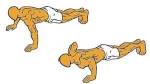
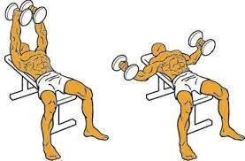
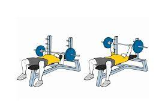
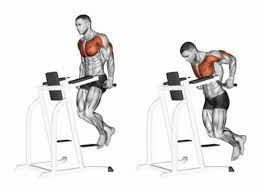
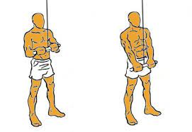
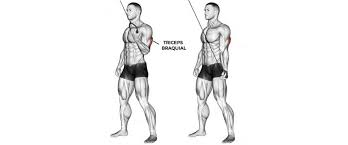

Los días de empuje en las rutinas son aquellos días donde se prioriza el entrenamiento de músculos que realizan patrones de movimiento donde se mueve una carga hacia adelante, siendo estos musculos:
- Pectoral
- Hombro
- Tricep
Los días de empuje en las rutinas son aquellos días donde se prioriza el entrenamiento de músculos que realizan patrones de movimiento donde se mueve una carga hacia adelante, siendo estos musculos:
El pecho o pectoral es un musculo compuesto por las fibras musculares superiores (pectoral mayor) y las menores (pectoral menor), los cuales se encuentran por encima de la caja toracica y se entrenan principalmente con movimientos que generen una aducción o rotación interna del hombro; por lo tanto para entrenar este musculo se deben realizar ejercicios que contengan dichos movimientos. Algunos de los mejores ejercicios para ejercitar este musculo son:
Muchos de estos ejercicios son variables, ya que pueden realizarse con barras, mancuernas o poleas, como es el caso de el "Press", las aperturas o las flexiones que pueden ir variando dependiendo el objetivo y las capacidades de cada uno.
  El hombro es otro grupo muscular compuesto que se ejercita mediante el trabajo del deltoides anterior, medial y posterior; aunque en las rutinas de empuje, el deltoides posterior suele ser separado y dejado de lado para ejercitar en conjunto con la espalda, por lo que se suele dar enfoque al hombro medio y anterior con ejercicios como:
Cabe destacar que la porción anterior del hombro suele recibir estimulo en los press de pecho mencionados anteriormente, por lo tanto al igual que el Tricep (que tambíen interviene en los ejercicios recién mencionados) suelen ser entrenados con menor intensidad y volumen en estas rutinas.
Para cerrar también vamos a destacar ejercicios que permitan focalizar el deltoides posterior.
El tricep es un músculo cuya terminología indica que esta compuesto por tres (tri) cabezas (ceps): la cabeza larga, la interna y la externa. Este músculo se entrena mediante extensiones de codo o antebrazo, y según el ángulo en la que se las realicen, recibirá más estímulo una cabeza u otra.
Para entrenar de forma optima el tricep se suelen realizar extensiones de codo movilizando la carga hacia abajo y otras cuyo patrón de movimiento sea una extensión por encima de la cabeza. Los mejores ejercicios para estimular este músculo son:
Los Fondos o el Press Plano son ejercicios compuestos, es decir que involucran varios músculos a la hora de realizarlos, esto nos permite entender aún mejor el por qué en la gran mayoría de rutinas, ciertos músculos (como en este caso los 3 mencionados) se entrenan en conjunto.
  